Image 1 of 1: ‘Diagram showing the 10x Chromium microfluidic chip where cells, gel beads, and oil are combined to form gel bead-in-emulsion (GEM) droplets. Each GEM contains one gel bead and ideally one cell.’
10x Chromium workflow overview
Figure 2
Image 1 of 1: ‘Schematic showing three sequencing reads from a 10x Chromium library. Read 1 is 28 bp and contains the 16 bp cell barcode followed by the 12 bp UMI. Read 2 is variable length and contains the cDNA insert that maps to the transcriptome. The I1 index read contains the sample index for demultiplexing.’
10x Chromium FASTQ read structure
Figure 3
Image 1 of 1: ‘Schematic of a count matrix with genes on rows and cells on columns. Most cells in the matrix contain zero, with occasional non-zero integer counts scattered throughout, illustrating the sparsity typical of single-cell RNA-seq data.’
UMI count matrix schematic
Figure 4
Image 1 of 1: ‘Flowchart of the scRNA-seq analysis pipeline covered in this workshop. Eight boxes arranged vertically show the progression: Raw Data Processing, Quality Control, Normalization and Feature Selection, Dimensionality Reduction and Clustering, Cell Type Annotation, Multi-Sample Integration, and Differential Expression. Arrows connect each step to the next.’
Image 1 of 1: ‘Diagram of the Seurat v5 object showing the RNA assay with its three layers (counts, data, scale.data) and the per-cell metadata columns’
Structure of the Seurat v5 object
Figure 2
Image 1 of 1: ‘Violin plots of nFeature_RNA, nCount_RNA, and percent.mt showing the distribution of QC metrics across all cells before filtering’
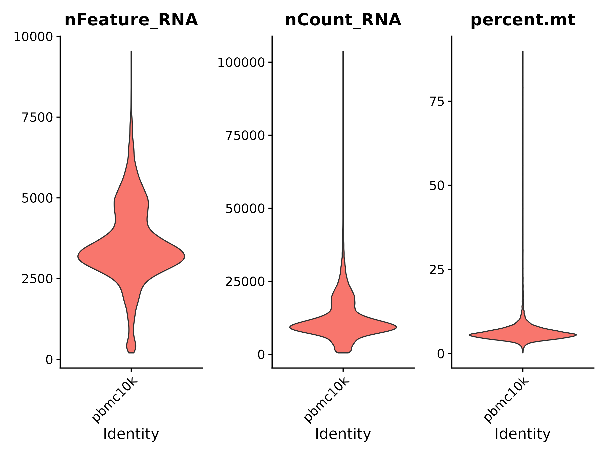
QC violin plots before filtering
Figure 3
Image 1 of 1: ‘Scatter plot of total UMI counts versus number of genes per cell colored by mitochondrial percentage, with high-mito cells highlighted in red’
QC scatter plot colored by mitochondrial
percentage
Figure 4
Image 1 of 1: ‘Violin plots of nFeature_RNA, nCount_RNA, and percent.mt with red dashed lines showing the filtering thresholds and individual cells visible as points’
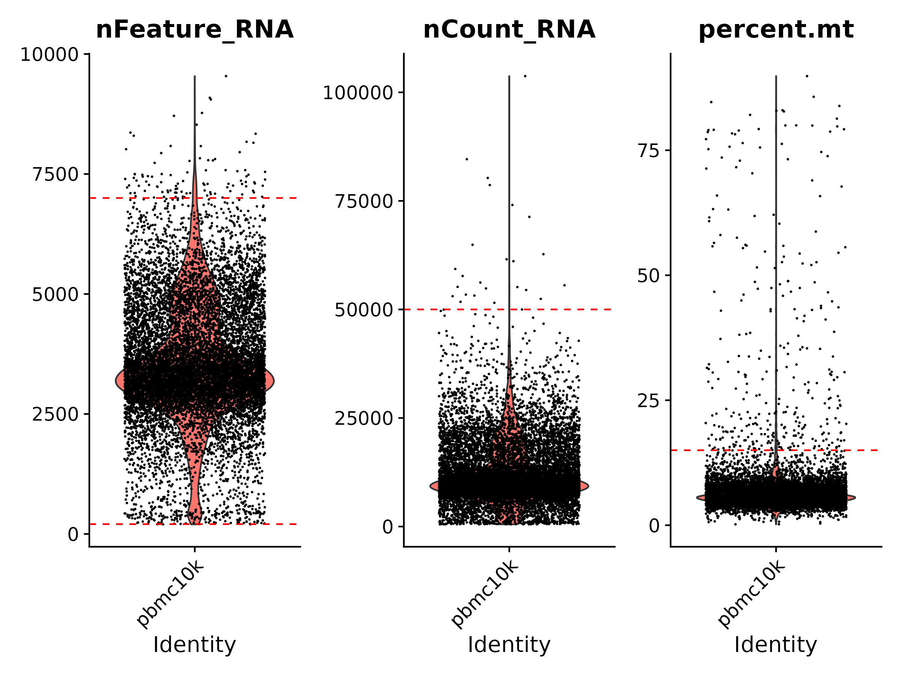
Violin plots with filtering thresholds
Figure 5
Image 1 of 1: ‘Violin plots of nFeature_RNA, nCount_RNA, and percent.mt after filtering, showing tighter distributions with extreme outliers removed’
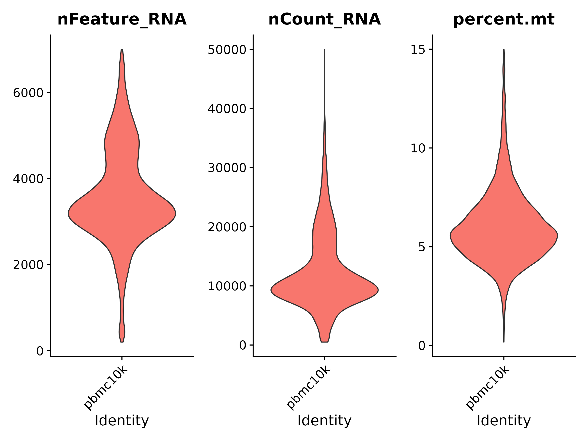
QC violin plots after filtering
Figure 6
Image 1 of 1: ‘Scatter plot of total UMI counts versus number of genes after filtering, colored by mitochondrial percentage, showing a tighter cloud with outliers removed’
Image 1 of 1: ‘Two histograms for LYZ. Raw counts show a zero-dominated right-skewed distribution. Log-normalized values reveal a bimodal pattern with peaks near 0.5 and 4.5, separating non-monocytes from LYZ-expressing monocytes’
LYZ raw vs. normalized expression
Figure 2
Image 1 of 1: ‘Variable feature plot showing mean expression versus standardized variance for all genes, with the top 2000 variable features highlighted in red and the top 10 labeled’
Variable feature selection plot
Figure 3
Image 1 of 1: ‘Four histograms in a 2x2 grid. Top row: ACTB raw counts show a right-skewed distribution peaking near zero; ACTB normalized shows a unimodal bell shape centered around 3.5. Bottom row: LYZ raw counts show a massive zero spike with a flat tail to 500; LYZ normalized reveals a bimodal pattern with peaks near 0.5 and 4.5’
Image 1 of 1: ‘Dot plots of the top 30 genes by loading magnitude for PC1 and PC2, with PC1 dominated by myeloid markers and PC2 by B cell markers.’
Dot plots showing the top 30 genes by loading
magnitude for PC1 and PC2. PC1 shows myeloid markers such as LYZ, CST3,
and S100A9. PC2 shows B cell markers such as BANK1, CD79A, and
MS4A1.
Figure 2
Image 1 of 1: ‘Grid of nine heatmaps for PC1 through PC9, each showing top genes ordered by loading and cells ordered by PC score to reveal distinct expression programs.’
Grid of nine heatmaps showing gene expression
patterns for PC1 through PC9. Each heatmap shows the top genes ordered
by loading with cells ordered by PC score, revealing distinct expression
programs.
Figure 3
Image 1 of 1: ‘Elbow plot of standard deviation versus PC number showing a steep decline through PC7 and a plateau after PC10, with the elbow around PC 8 to 10.’
Dot plot of standard deviation versus principal
component number. The curve drops steeply for the first 7 PCs then
gradually flattens, with an elbow around PC 8 to 10.
Figure 4
Image 1 of 1: ‘UMAP scatter plot of 11310 cells in a single color before clustering, with cells forming several spatially distinct groups that correspond to different cell types.’
UMAP plot of all cells shown in a single color
before clustering. Cells naturally organize into several spatially
distinct groups corresponding to different cell types.
Figure 5
Image 1 of 1: ‘UMAP plot colored by Louvain cluster identity at resolution 0.5, showing 18 clusters numbered 0 through 17 with large clusters in the center and small clusters at the periphery.’
UMAP plot with 18 clusters labeled 0 through 17,
each shown in a distinct color. Large clusters like 0 and 1 dominate the
center and bottom, while smaller clusters appear at the periphery.
Figure 6
Image 1 of 1: ‘Clustree diagram tracing cluster membership from resolution 0.2 to 1.2, with clean branches indicating stable splits and tangled arrows indicating unstable over-splitting.’
Clustree diagram showing how clusters split as
resolution increases from 0.2 to 1.2. At low resolution a few large
clusters exist, which progressively split into more subclusters at
higher resolutions. Stable splits show clean branches while unstable
splits show cells moving between multiple clusters.
Figure 7
Image 1 of 1: ‘Four UMAP panels showing expression of CD3D, MS4A1, LYZ, and GNLY on a grey-to-purple gradient, each marking distinct cell populations for T cells, B cells, monocytes, and NK cells.’
Four UMAP plots showing expression of CD3D,
MS4A1, LYZ, and GNLY. Each gene is highlighted in a different cluster
region, indicating T cells, B cells, monocytes, and NK cells
respectively.
Figure 8
Image 1 of 1: ‘Violin plots of CD3D, MS4A1, LYZ, and GNLY expression across 18 clusters, showing each marker with high expression in specific clusters and near-zero expression elsewhere.’
Violin plots showing expression of CD3D, MS4A1,
LYZ, and GNLY across all clusters. Each marker shows high expression in
one or two specific clusters and low or zero expression in the
others.
Figure 9
Image 1 of 1: ‘Side-by-side UMAP plots at resolutions 0.2, 0.5, 0.8, and 1.2 showing progressively more clusters as resolution increases.’
Four UMAP plots comparing clustering at
resolutions 0.2, 0.5, 0.8, and 1.2. Lower resolutions produce fewer
large clusters while higher resolutions split cells into progressively
more subclusters.
Figure 10
Image 1 of 1: ‘Three UMAP panels showing expression of CD3D, MS4A1, and LYZ. CD3D expression is concentrated in the upper-left and lower-left regions. MS4A1 lights up a compact group in the upper-right. LYZ is strongest in the lower-left clusters.’
FeaturePlot of CD3D, MS4A1, and LYZ on the UMAP,
each highlighting distinct cell populations
Figure 11
Image 1 of 1: ‘UMAP plot with 18 clusters labeled 0 through 17 for cross-referencing with the FeaturePlot above.’
Image 1 of 1: ‘UMAP plot with 18 clusters labeled 0 through 17 at resolution 0.5, matching the clustering results from the previous episode.’
Clustered UMAP from previous episode
Figure 2
Image 1 of 1: ‘Heatmap showing expression of the top 3 marker genes per cluster across all 18 clusters. Each cluster shows a distinct block of upregulated genes, confirming distinct transcriptional identities.’
Heatmap of top 3 markers per cluster
Figure 3
Image 1 of 1: ‘Dot plot showing expression of top 3 marker genes across all 18 clusters. Dot size indicates the percentage of cells expressing each gene; dot shading indicates average expression level.’
Dot plot of top marker genes
Figure 4
Image 1 of 1: ‘Grid of 8 UMAP panels showing expression of CD3D, IL7R, CD8A, MS4A1, LYZ, FCGR3A, GNLY, and FCER1A. Each marker highlights a distinct UMAP region: CD3D and IL7R in the upper-left T cell area, CD8A in a small cluster on the right, MS4A1 in B cells on the right, LYZ in monocytes at the lower-left, FCGR3A in a small cluster at the lower-right, GNLY in NK cells at the upper-center, and FCER1A in a small dendritic cell group.’
FeaturePlot of 8 canonical PBMC markers
Figure 5
Image 1 of 1: ‘Violin plots of CD3D, IL7R, CD8A, MS4A1, LYZ, FCGR3A, GNLY, and PPBP across all 18 clusters. Each marker shows high expression in the clusters corresponding to its known cell type and low expression elsewhere.’
Violin plots of 8 PBMC markers across
clusters
Figure 6
Image 1 of 1: ‘UMAP plot with cells labeled by manually assigned cell type names: CD4 T, CD14 Mono, NK, B, CD8 T, FCGR3A+ Mono, DC, pDC, and Platelet.’
Annotated UMAP with cell type labels
Figure 7
Image 1 of 1: ‘UMAP plot with cells colored by SingleR automated annotation labels from the Monaco Immune reference, showing CD4+ T cells, CD8+ T cells, T cells, Monocytes, B cells, NK cells, Dendritic cells, Progenitors, and Basophils.’
SingleR annotated UMAP
Figure 8
Image 1 of 1: ‘Two UMAP plots side by side. Left panel shows manual annotation with CD4 T, CD14 Mono, NK, B, CD8 T, FCGR3A+ Mono, DC, pDC, and Platelet labels. Right panel shows SingleR annotation with CD4+ T cells, CD8+ T cells, T cells, Monocytes, B cells, NK cells, Dendritic cells, Progenitors, and Basophils. Most cell groups receive consistent labels between the two methods.’
Manual vs SingleR annotation side by side
Figure 9
Image 1 of 1: ‘Violin plots of CD3D, SELL, CCR7, CD69, and IL7R across all annotated cell types. CD4 T cells show uniformly high CD3D and IL7R, high SELL, moderate CCR7, and a broad bimodal distribution of CD69 indicating a mixture of naive and recently activated T cells.’
Image 1 of 1: ‘UMAP plot of the IFNB dataset before integration showing CTRL and STIM cells forming separate clusters driven by batch effects rather than cell type identity.’
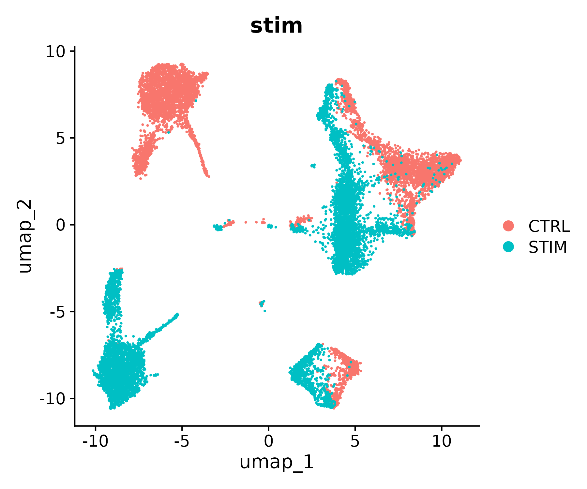
UMAP plot of IFNB dataset before integration.
CTRL (salmon) and STIM (teal) cells form largely separate clusters.
Several clusters are dominated by one condition, indicating batch-driven
rather than cell-type-driven clustering.
Figure 2
Image 1 of 1: ‘UMAP plot of the IFNB dataset after CCA integration showing control and stimulated cells intermingled within each cluster, indicating successful batch correction.’
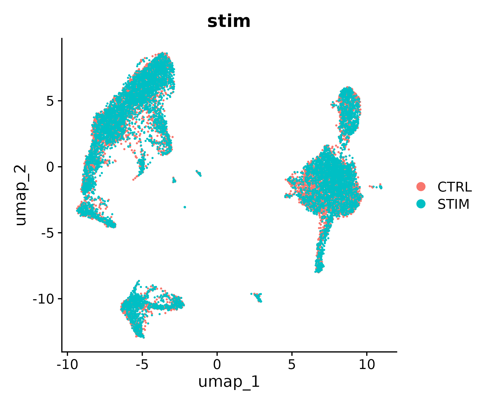
UMAP plot after CCA integration. CTRL and STIM
cells are now intermingled within each cluster, with teal (STIM)
dominating the overlay. Cell types co-cluster regardless of
condition.
Figure 3
Image 1 of 1: ‘Split UMAP view showing CTRL and STIM conditions side by side after integration, with both panels displaying the same 14 clusters in identical spatial arrangement.’
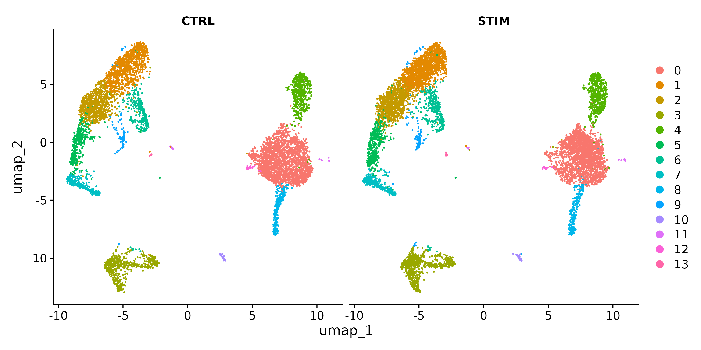
Two side-by-side UMAP panels split by condition
(CTRL and STIM) after integration. Both panels show 14 clusters numbered
0 through 13, with the same spatial arrangement in each panel,
confirming successful integration.
Figure 4
Image 1 of 1: ‘Annotated UMAP plot of the integrated IFNB dataset with nine labeled cell types including CD14 Mono, CD4 T, CD8 T, B, NK, FCGR3A Mono, DC, Mk, and Eryth.’
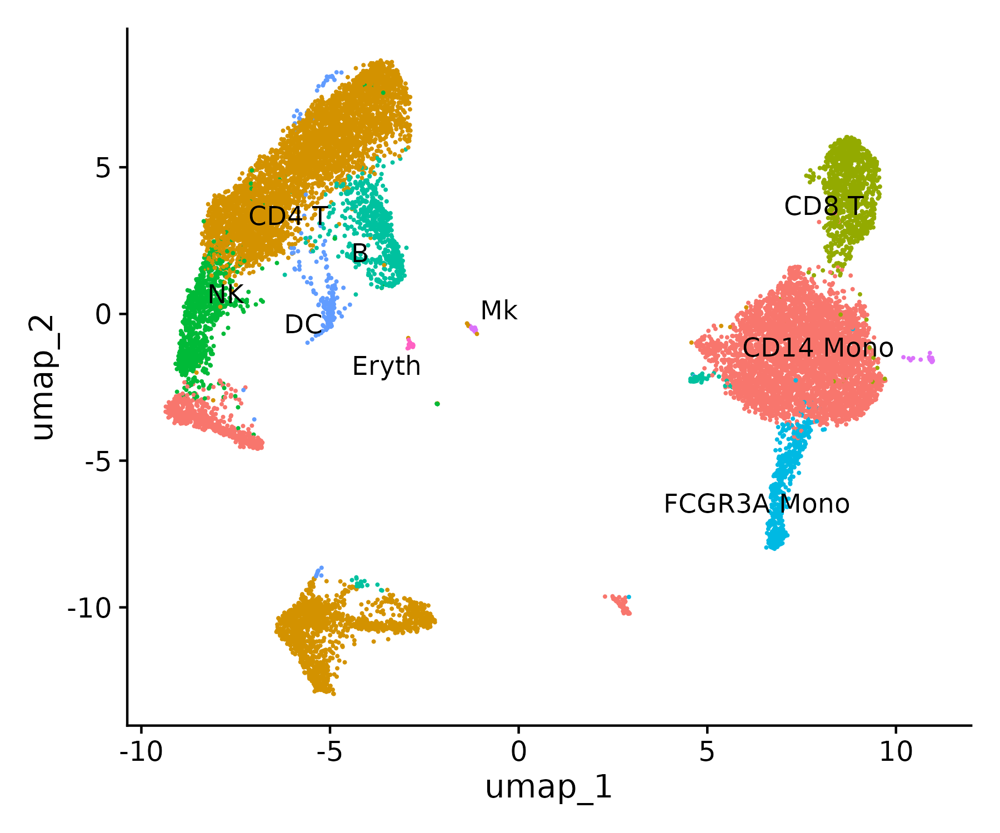
UMAP plot with cells colored and labeled by
annotated cell type. Nine cell types are visible: CD14 Mono (large
cluster, right), CD4 T (large, upper left), CD8 T (upper right), B
(center left), NK (left), FCGR3A Mono (lower right), DC (small, center),
Mk (small, center right), and Eryth (small, bottom).
Figure 5
Image 1 of 1: ‘FeaturePlot of ISG genes split by condition showing near-absent expression in CTRL panels and strong red expression in STIM panels, especially in monocyte clusters.’
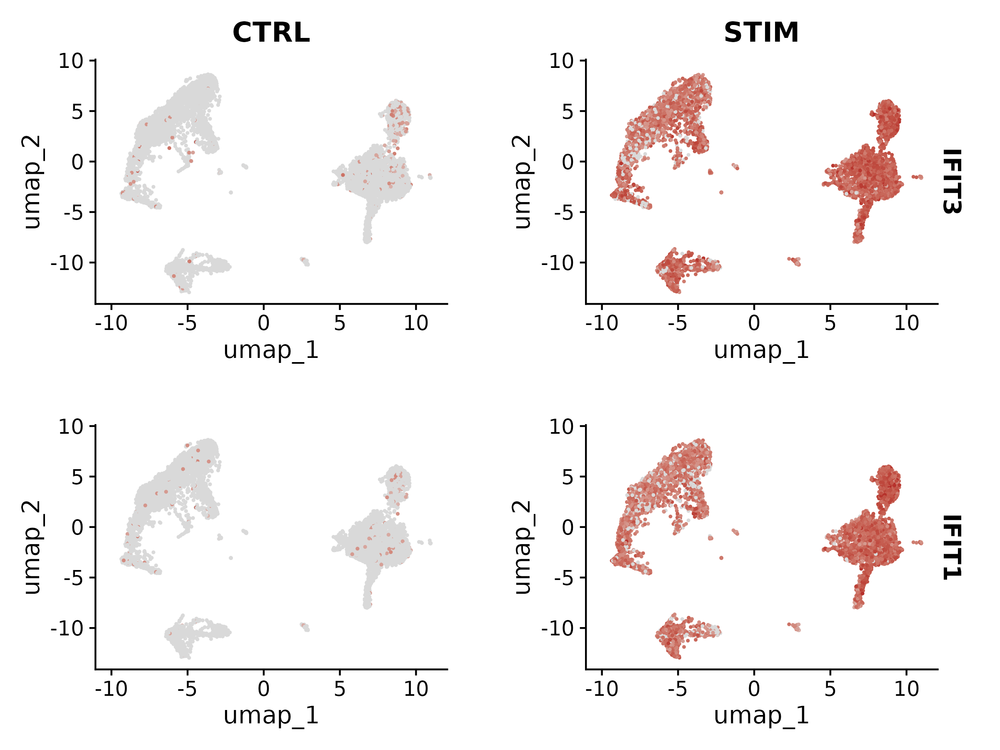
Four-row FeaturePlot split by CTRL and STIM for
ISG15, IFIT1, TNFSF10, and RSAD2. CTRL panels show mostly grey cells
with sparse expression. STIM panels show strong red expression across
monocyte and other clusters for all four genes.
Figure 6
Image 1 of 1: ‘Violin plots of IFIT1, IFIT3, TNFSF10, and RSAD2 in CD14 monocytes showing flat expression in control and broad high expression in stimulated cells.’
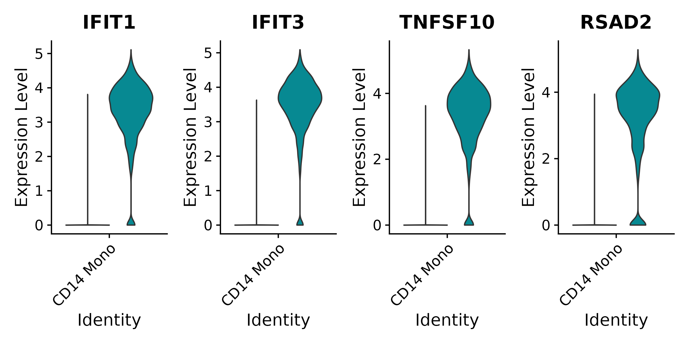
Four violin plots for IFIT1, IFIT3, TNFSF10, and
RSAD2 in CD14 monocytes. Each panel shows two violins: a thin line at
zero for control and a broad teal shape peaking around expression level
3 to 4 for stimulated, confirming strong IFN-beta induction.
Figure 7
Image 1 of 1: ‘Split UMAP showing CTRL and STIM panels with cell type labels, demonstrating balanced mixing of conditions within each annotated cluster.’
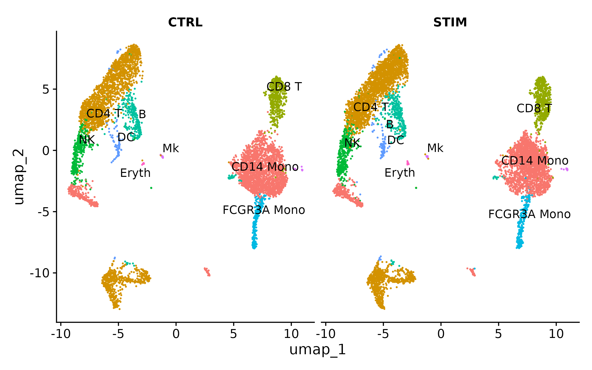
Split UMAP with CTRL and STIM panels, cells
labeled by cell type. Both panels show identical cluster arrangement
with CD4 T, CD8 T, B, NK, CD14 Mono, FCGR3A Mono, DC, Mk, and Eryth
labels, confirming balanced condition mixing within each cell
type.
Figure 8
Image 1 of 1: ‘FeaturePlot of CCL8, CXCL11, CXCL10, and HESX1 split by condition showing absent expression in control and strong monocyte-concentrated expression in stimulated cells.’
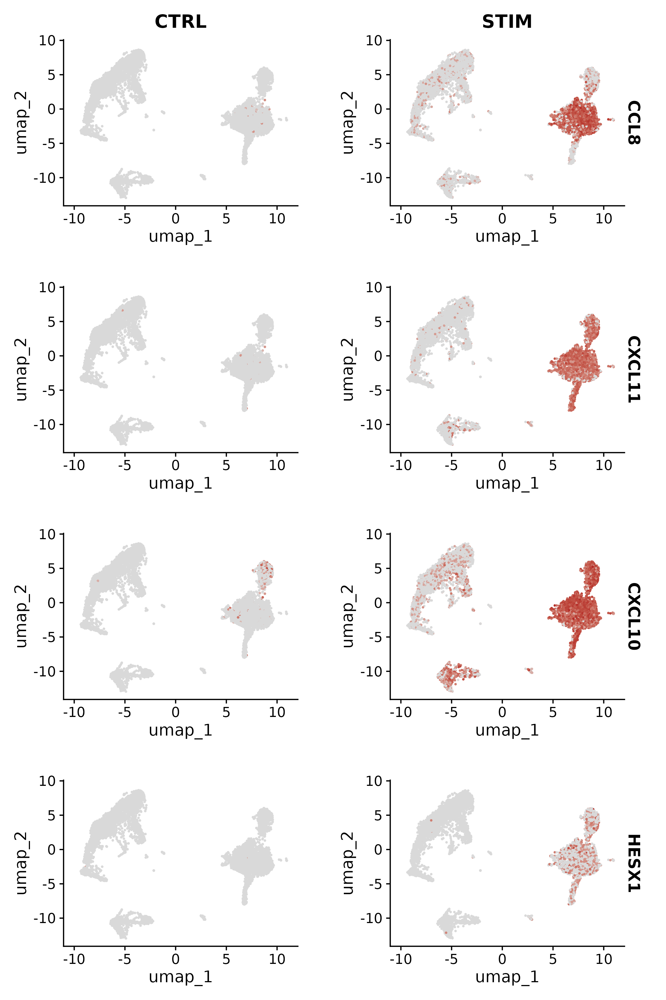
Four-row FeaturePlot split by CTRL and STIM
showing CCL8, CXCL11, CXCL10, and HESX1. CTRL panels are almost entirely
grey. STIM panels show strong red expression concentrated in the
monocyte clusters for all four chemokine and ISG genes.
Image 1 of 1: ‘UMAP split by CTRL and STIM conditions with nine cell types colored and labeled, showing identical spatial arrangement in both panels confirming successful integration.’
Split UMAP showing CTRL and STIM panels with
cells colored and labeled by cell type.
Figure 2
Image 1 of 1: ‘Volcano plot showing upregulated genes in red in the upper right, downregulated genes in blue in the upper left, and non-significant genes in grey near the bottom, with dashed cutoff lines for significance and fold change.’
Volcano plot for CD14 monocytes STIM vs
CTRL.
Figure 3
Image 1 of 1: ‘Feature plot of IFIT1 expression split by condition showing near-absent expression in control cells and strong expression across all cell types in stimulated cells, especially monocytes.’
FeaturePlot of IFIT1 split by CTRL and
STIM.
Figure 4
Image 1 of 1: ‘Three violin plot panels showing IFIT1, CXCL10, and MX1 dramatically upregulated in stimulated cells across all cell types, with control violins near zero and stimulated violins broad and tall.’
Violin plots for IFIT1, CXCL10, and MX1 across
cell types, split by condition.
Figure 5
Image 1 of 1: ‘Dot plot showing top 10 DE genes across all cell types split by CTRL and STIM, with dot size indicating percent expressed and color indicating average expression, showing consistently larger and redder dots in stimulated cells.’
Dot plot of top 10 DE genes across cell types
split by condition.
Figure 6
Image 1 of 1: ‘GO enrichment dot plot showing 15 biological process terms with response to virus, defense response to virus, and viral process as the top three by gene ratio, with dot color from red to blue indicating adjusted p-value.’
GO Biological Process dot plot for STIM vs CTRL
CD14 monocytes.
Figure 7
Image 1 of 1: ‘Scatter plot of negative log10 p-values from Wilcoxon versus pseudobulk for shared genes, with a red dashed diagonal showing equal significance and points broadly scattered indicating different significance rankings between methods.’
Scatter plot comparing p-values from Wilcoxon
and pseudobulk DE tests.
Figure 8
Image 1 of 1: ‘GO enrichment dot plot for top 200 upregulated genes showing 10 biological process terms with response to virus and defense response to virus having the largest gene ratios and deepest red color indicating lowest adjusted p-values.’
GO BP dot plot for the top 200 upregulated genes
in STIM CD14 monocytes.